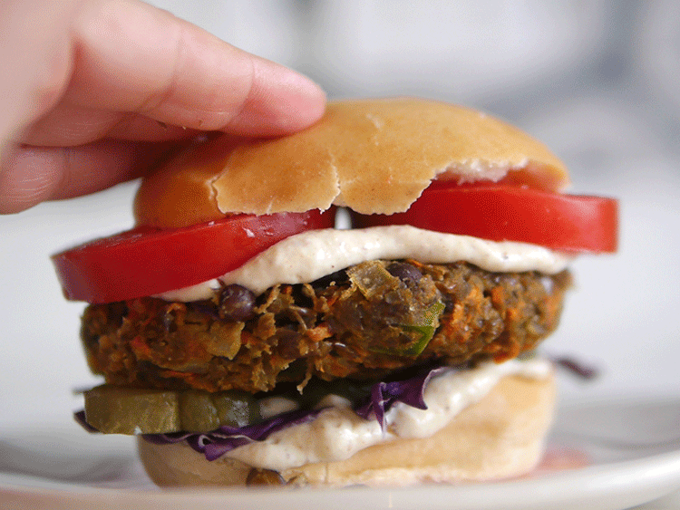

Sopa cremosa vegana
Ingredientes
- 1 Cebolla blanca
- 2 dientes de ajo
- 3/4 zapallo calabacín
- 2 zanahorias medianas
- 1 caldo de verduras
- 400 ml de agua
- óregano, sal, pimienta a gusto
Pasos a seguir
- Cortar la cebolla y los dientes de ajo en tamaño pequeño
- Cortar el zapallo y las zanahorias en cubitos medianos
- Calentar el agua y agregarle el caldo de verduras hasta que se disuelva
- Poner en una olla con un poco de aceite la cebolla y el ajo, agregar el zapallo y las zanahorias para que vayan tomando sabor, dejar unos minutos y agregar el caldo. Cuando las verduras esten blandas condimentar a gusto. Apagar el fuego y licuar o mixear todo y a disfrutar
Tiempo de coción
- 30 minutos aprox.
Hamburguesas de lentejas

Ingredientes
- 250g. de lentejas cocidas
- 1 zanahoria
- media cebolla
- 1 diente de ajo
- 1 trozo de morrón
- Avena o pan rallado
- 1 cebolla de verdeo
- 1 clara
- sal, pimienta, aceite
Pasos a seguir
- Poner las lentejas cocidas en un bol y pisarlas o pasarlas por un mixer o procesadora. Rallar la zanahoria y sumarla a las lentejas.
- Picar la cebolla, el ajo y el morrón y saltear en una sartén con aceite hasta que la cebolla esté transparente. Son unos minutos nomás.
- Poner la clara de huevo y un poco de pan rallado y mezclar con la mano. Pueden usar el huevo entero, pero la clara nos ayuda a unirla sin aportar más sabores o grasas. Si la mezcla está muy húmeda, agregar un poco más de avena o pan rallado. Mandar a la heladera 30 minutos.
- Para darle forma a las hamburguesas de lentejas, se pueden untar las manos con un poco de aceite, armar bollitos y luego aplastarlas
- Se pueden hacer a la plancha o al horno, y también se pueden congelar con separadores para tener listas.
Se puede hacer lo mismo con garbanzos y/u otras verduras mezcladas
Verduras al Wok

Ingredientes
- 1 Cebolla
- 1 Morrón
- 1 Zanahoria
- 1 Zucchini
- 1 Berenjena
- 1 Brócoli
- 1 Ajo picado
- Sal,pimienta y salsa de soja
Pasos a seguir
- Cortar todas las verduras en juliana y reservarlas.
- Calentar en un wok un poco de aceite de oliva, cuando está caliente se agregan las verduras. Comenzar a cocinar a fuego fuerte.
- Cada tanto mover un poco el wok con movimientos suaves evitando que se rompan. Continuar dorando.
- Pasados 10 minutos, agregar un poco de agua, salsa de soja y la tapa. Se cocina así por 5 minutos más.
- Pasado el tiempo, ya esta casi listo. Por último se agrega la sal, el ajo picado y la pimienta. No volver a colocar la tapa, continuar cocinando y revolver cada tanto por 10 minutos más.
- Comprobar que los vegetales estén correctamente cocidos. Apagar el fuego y servir el wok de verduras como acompañamiento o plato principal.